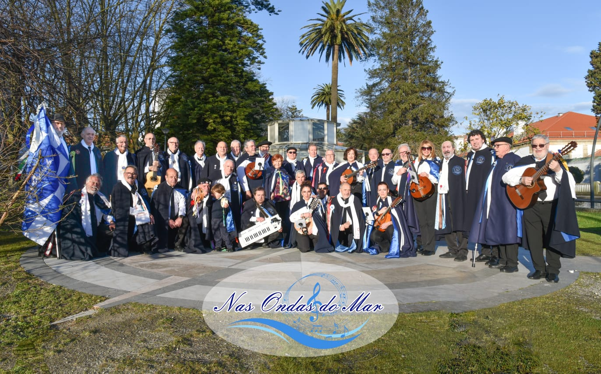

Rondalleando por Ultramar
Participación na vida cultural e musical de Ferrol.
Música, tradición e sentimento
36 integrantes unidos pola ilusión de compartir a música e manter viva a tradición.
CoñécenosSomos Nas Ondas do Mar, unha agrupación musical de Ferrol formada por 36 persoas que comparten o amor pola música, polas voces e polos instrumentos tradicionais.

Nas Ondas do Mar nace en Ferrol en novembro de 2024, froito da ilusión, da amizade e do compromiso dun grupo de músicos unidos polo amor á música e ás tradicións galegas. Desde a súa creación, iniciou unha singradura musical cun proxecto propio, baseado na convivencia, na ilusión compartida e no desexo de manter viva a cultura musical da nosa terra. Hoxe, os seus 36 integrantes levan a música tradicional e popular a diferentes escenarios e localidades.
Toma o relevo de Mari Ponce Orjales.
Un repertorio de pezas tradicionais e populares, vencelladas á cultura galega e á tradición musical de Ferrol.
Participación na vida cultural e musical de Ferrol.
Encontros e actuacións en diferentes localidades. Aquí iremos publicando as próximas datas.
Un primeiro recordo da agrupación. Nesta sección engadiremos novas fotografías e vídeos das actuacións e dos encontros.
Esta sección queda preparada para engadir un correo, teléfono ou ligazón ás redes sociais oficiais da agrupación cando queirades publicalos.